Occluder Box
Overview
An occluder box is a specialized geometry used to improve performance. Every object that fully obscured by occluder box is excluded from rendering. Partially obscured objects stay intact.
If any part of an object extends beyond the occluder box, it will reappear: see video 1 and video 2 for reference.
Creating an Occluder Box
To create an occluder box for an object, follow these steps:
Create a Box object.
Name the object
occluder_box.Create a material using the Dagor Dagorrat Material 2 shader.
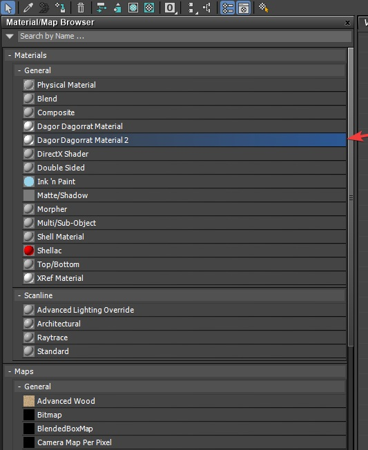
Set the shader class to
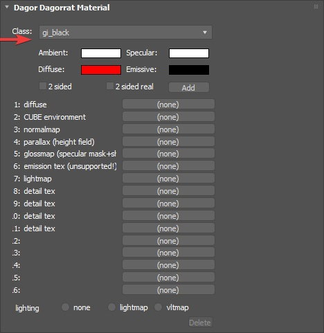 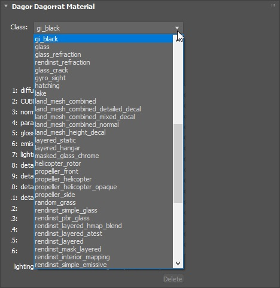gi_black(for better visibility, it’s recommended to choose a material color that contrasts with the object, like bright red).Assign the material to the object named
occluder_box.Open the object’s properties and uncheck the Renderable option (this will prevent potential issues later on).
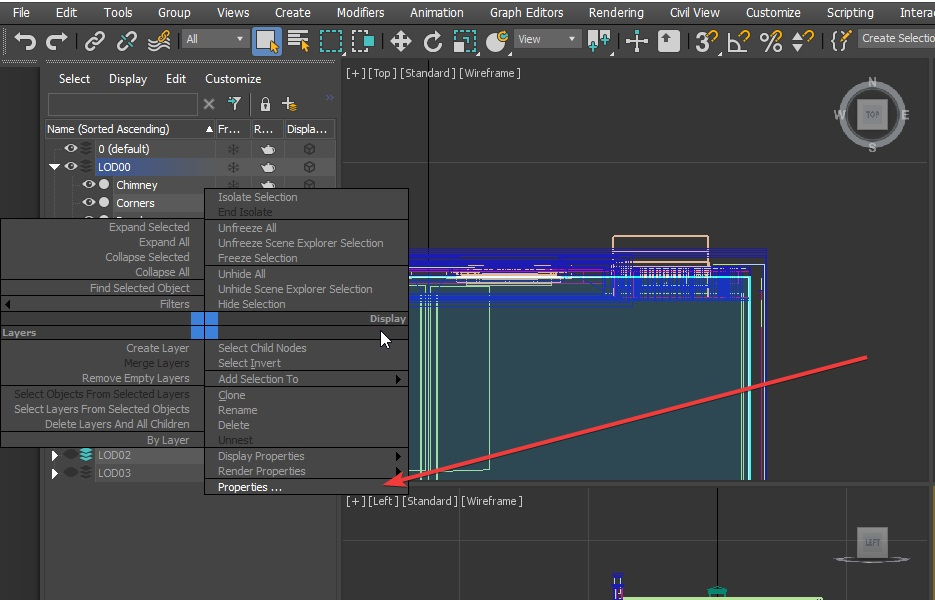 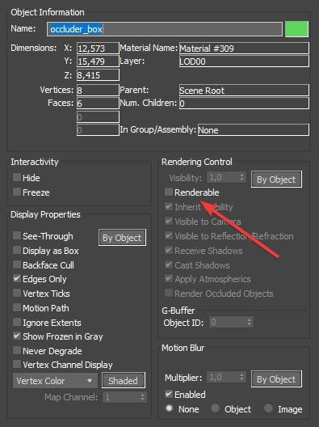In the User Defined tab, input the following:
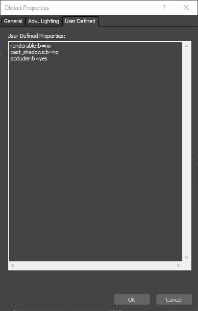renderable:b=no cast_shadows:b=no occluder:b=yes collidable:b=no
User Defined Properties:
renderable:b=no– Disables the object from being rendered.cast_shadows:b=no– Prevents the object from casting shadows.occluder:b=yes– Designates the object as an occluder.collidable:b=no– Disables collision generation.
Important
Unchecking the collidable option in the Dagor object properties does not achieve the same result!
To verify this, check the asset in the Asset Viewer. If the occluder box is visible in the collision data, the setup is incorrect. The collision should not include an
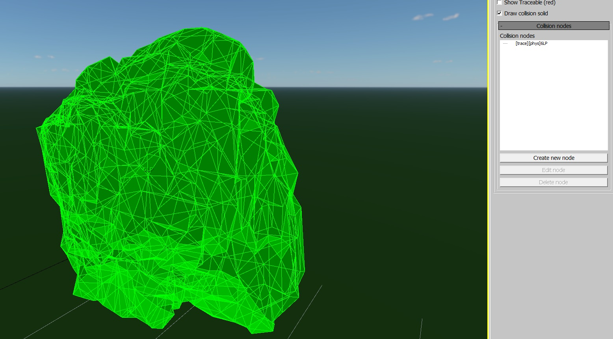occluder_boxnode.Convert the
occluder_boxobject toEditable Polyor apply anEdit Polymodifier.Adjust the size to fit the object it should occlude. Specific size requirements are detailed below.
{kind=link}
{kind=link}
{kind=link}
{kind=link}
{kind=link}
{kind=link}
{kind=link}
Editing the Occluder Box
The occluder box is aptly named because only its bounding box matters, regardless of its orientation. Therefore, the following rules apply when creating an occluder box:
The occluder box should never extend beyond the object’s geometry.
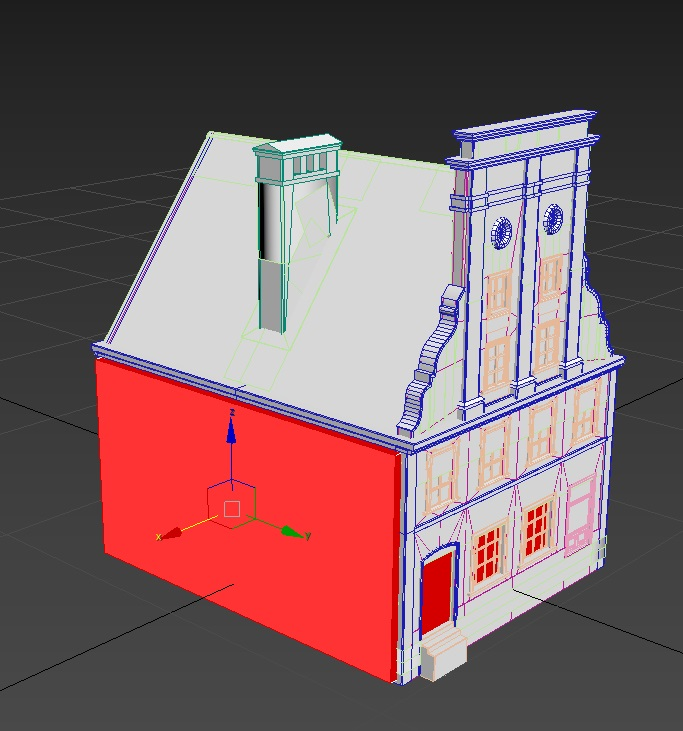 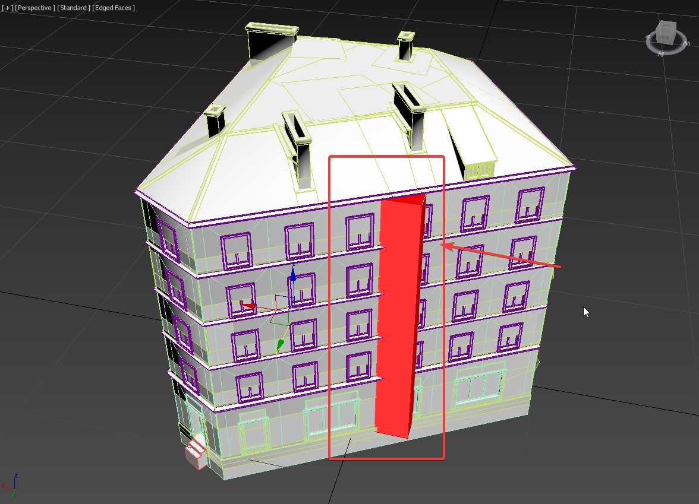It should fill as much of the object’s internal space as possible, similar to UV mapping, without exceeding the object’s boundaries.
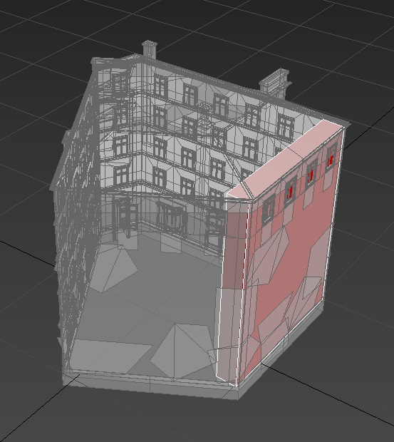
Rotating the occluder box is highly discouraged.
Here is an example of an unrotated occluder box:
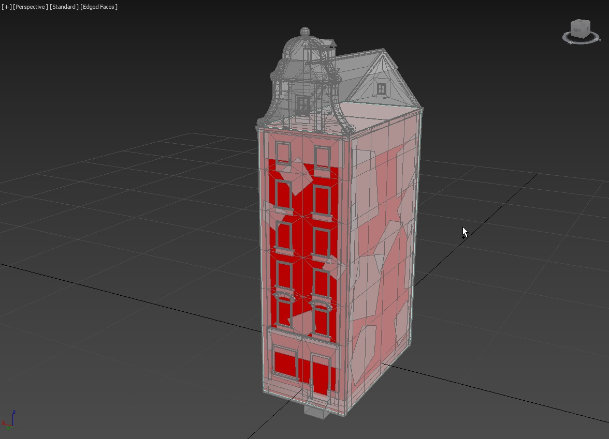 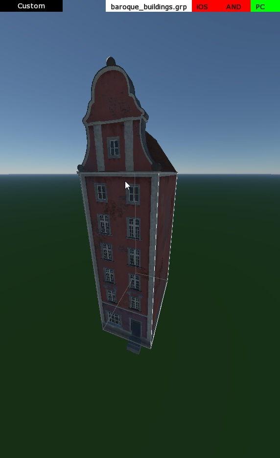
And here’s how it looks when rotated:
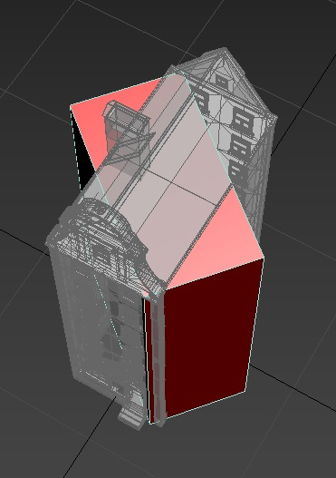 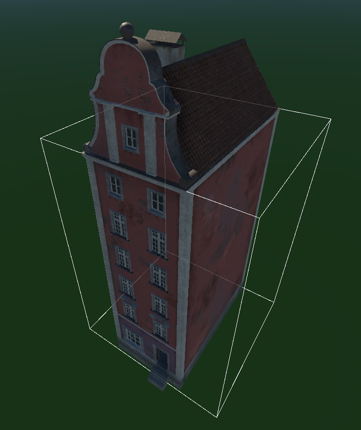Do not name the object anything other than
occluder_box.The occluder box should be placed in the
LOD00layer.
{kind=link}
{kind=link}
{kind=link}
{kind=link}
{kind=link}
{kind=link}
{kind=link}
Tip
If you need to remove an occluder box, delete its polygons while retaining the object and its properties as described.
Verifying Occluder Box Setup
There are several ways to verify if the occluder box is set up correctly:
In Asset Viewer, the occluder box is displayed as a white rectangle.
If it’s not visible, ensure the proper setting is enabled. If the occluder box appears misaligned (as shown in the image), you will need to correct it in 3ds Max.
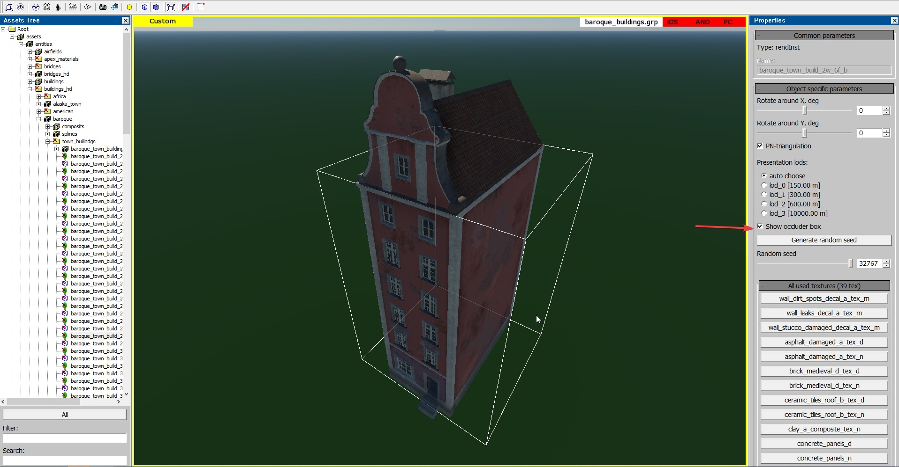
During in-game testing, you can observe the occluder box in action by pressing
F3to display the wireframe, see video for reference.If objects behind the occluder do not disappear, disappear too early, too late, or not at all, recheck the setup based on the guidelines above. If the occluder box is incorrectly configured, you will likely encounter issues similar to those shown in video 1 and video 2.
{kind=link}
Examples of Well-Configured Occluder Boxes
Here are several example images of correctly set up occluder boxes.
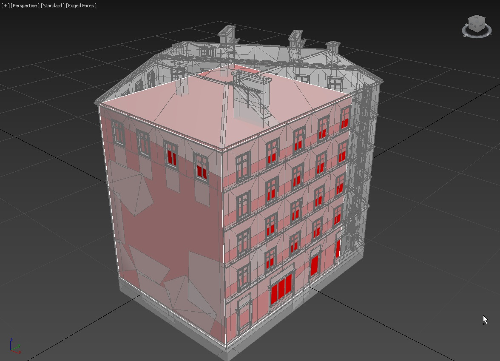 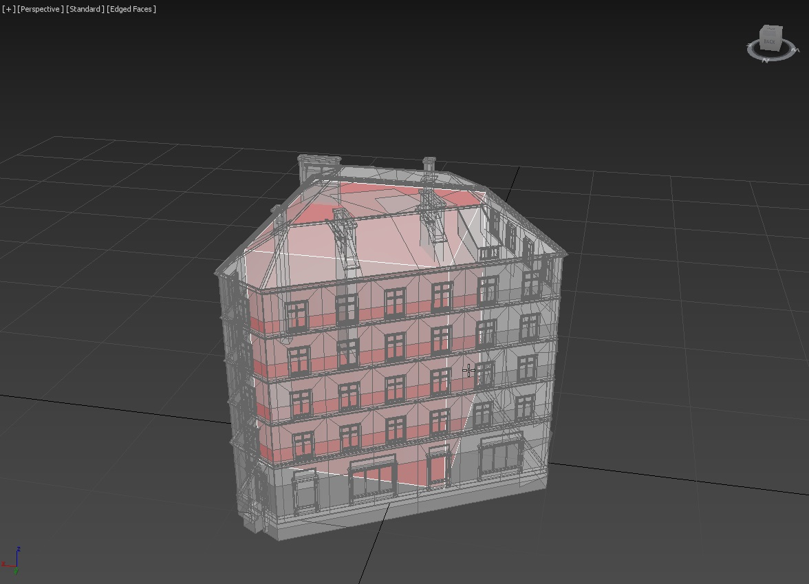 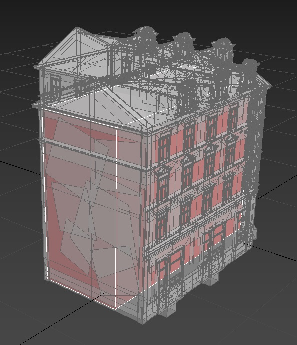 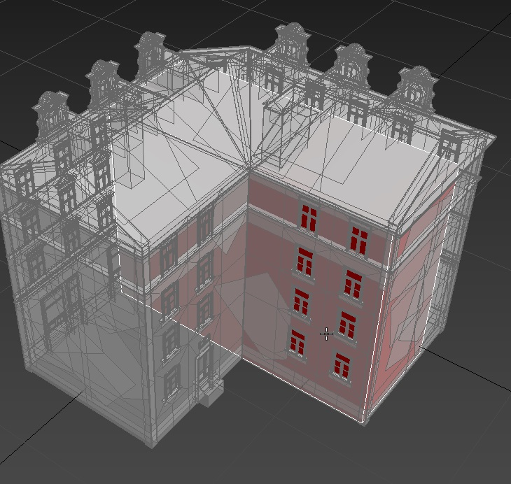{kind=link}
{kind=link}
{kind=link}
{kind=link}
{kind=link}
Commands for Displaying Occluders
render.debug occlusion– Shows occluders and their statistics.render.debug occlusion occluded– Displays bounding boxes of occluded objects.
Toggle commands:
render.debug occlusion boxesrender.debug occlusion statsrender.debug occlusion occludedvrender.debug occlusion not_occluded
Additionally, you can use:
occlusion.enabled– Enables or disables occlusion rendering entirely.rendinst.check_occlusion– Enables or disables occlusion for render instances.